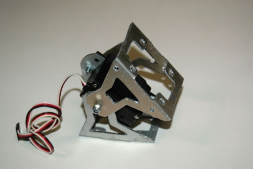
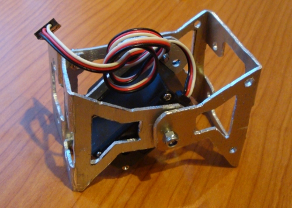
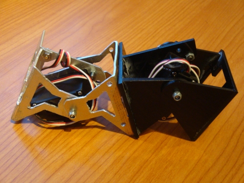

Os presentamos la primera prueba de concepto de los módulos MY-1 para construir robots modulares. Han sido diseñados por Andrés Prieto-Moreno. El nombre viene de la abreviación de Metal + Y1. Son la versión de aluminio de los módulos Y1.

Tienen las mismas dimensiones que los Y1 y son compatibles, por lo que se pueden conectar entre ellos. Los módulos MY-1 tienen un diseñoo mejorado: son más robustos, más fáciles de montar, mejoran la colocación del cableado y permiten añadir piezas adicionales para colocar las pilas u otros accesorios.
En esta foto se ha montado la configuración mínima PP híbrida, formada por un módulo MY-1 y uno Y1. Hemos realizado pruebas de locomoción para validar los nuevos módulos.

Este primer prototipo está realizado a mano, por eso el acabado es tosco. El siguiente paso es sacar prototipos en un taller, para mecanizarlo y comprobar que todo funciona correctamente. Finalmente sacaremos una tirada industrial, ya perfectamente acabada, para poder construir robots modulares con ellos 🙂
Estos son los módulos que utilizaremos en el I taller de robots modulares